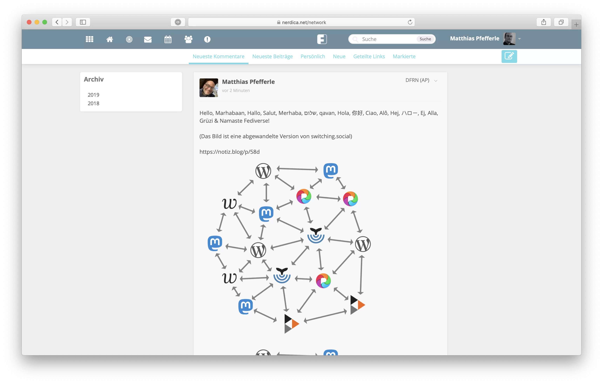
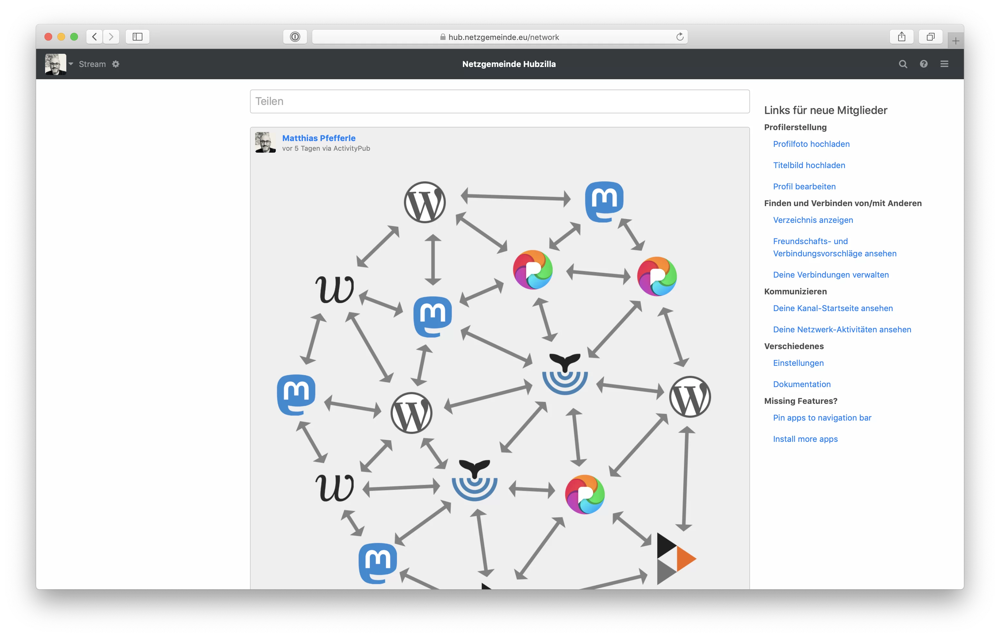
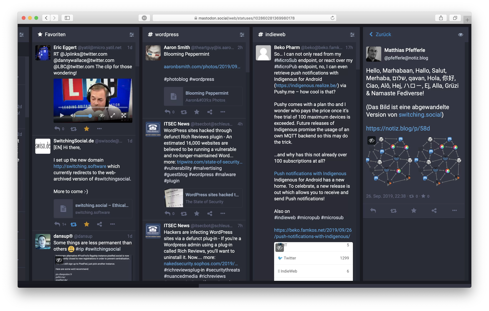
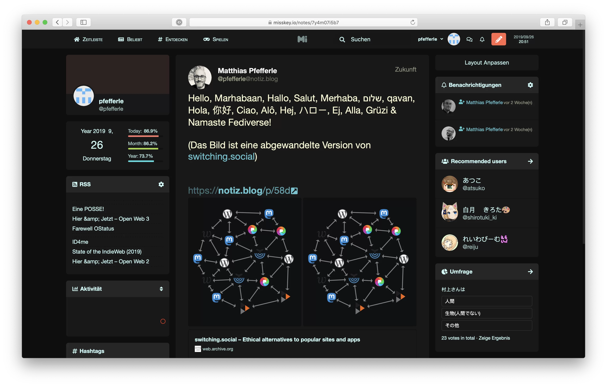
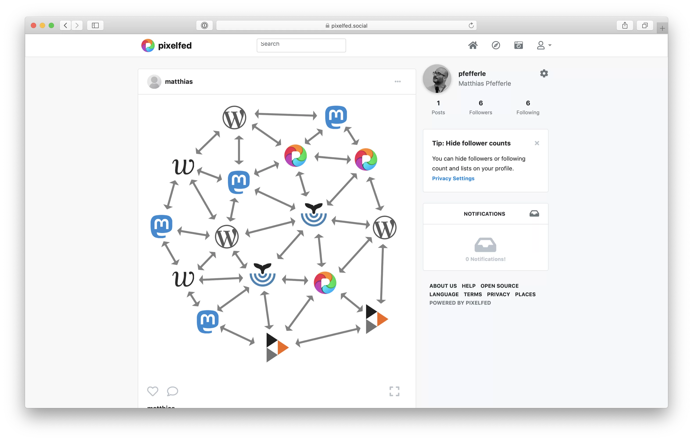
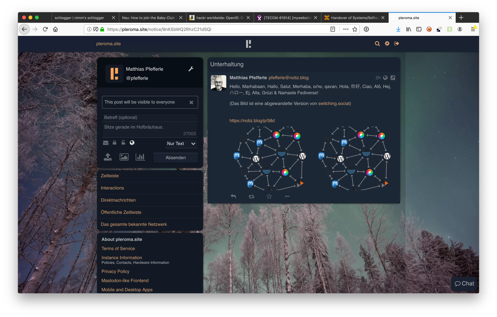
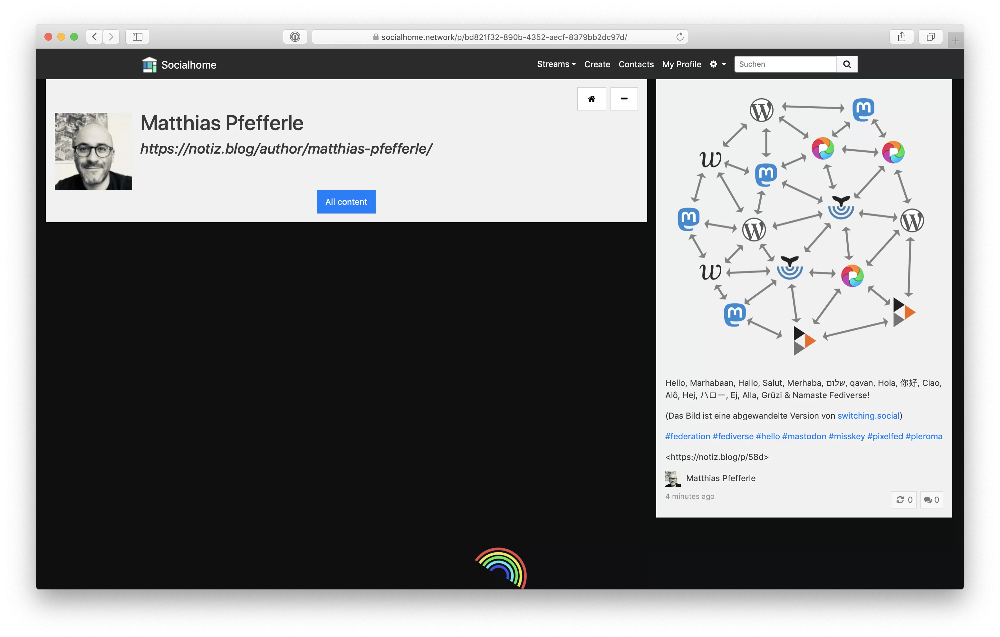

WordPress, das IndieWeb, das Fediverse
(und Friends)https://notiz.blog/about/
https://notiz.blog/now/
(https://nownownow.com/)https://notiz.blog/follow/
https://marcus.io/blog/making-rss-more-visible-again-with-slash-feeds)https://notiz.blog/contact/
Wie alles begann!
Warum der ganze Aufwand?
Wie konnte das passieren?
Facebook, Twitter & Co. sind so schön einfach zu bedienen!
Ja und?
Ist das schlimm?
Ist DAS schlimm?
Surveillance capitalism is a new term addressing the process of commodifying personal data with the core purpose of profit-making.https://en.wikipedia.org/wiki/Surveillance_capitalism
"Mensch sein in Zeiten digitaler Entmenschlichung"
Caspar Hübinger - WordCamp Stuttgart 09-10.11.2019https://glueckpress.com/10283/mensch-sein-in-zeiten-digitaler-entmenschlichung/
Warum bleiben trotzdem alle bei Facebook, Instagram und Whatsapp?
Don't Panic!
<Demo Time>
Building Blocks
https://indieweb.org/Category:building-blocksMicroformats statt RSS/Atom
https://microformats.org/Webmention statt Pingbacks
https://webmention.net/Micropub statt XML-RPC
https://micropub.net/IndieAuth/Rel-Me-Auth statt OpenID (Connect)
https://indieauth.net/IndieWeb
Follow
Read
Reply
Like

</Demo Time>
<Demo Time>
</Demo Time>
Friendi.ca
HubZilla
Mastodon
Misskey
Pixelfed
Pleroma
Socialhome
Ende?
Einen hätte ich noch...
https://wordpress.org/plugins/friends/Homebrew Website Club Karlsruhe
- https://indieweb.org/Homebrew_Website_Club#.F0.9F.94.BA_Karlsruhe
- https://github.com/hwc-ka/